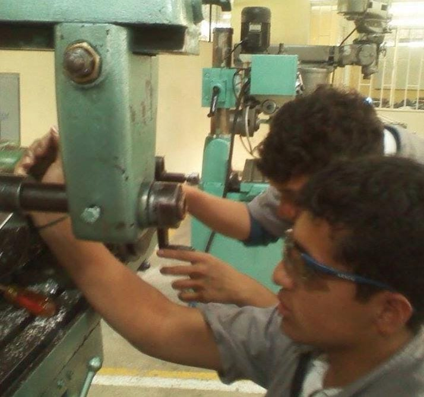
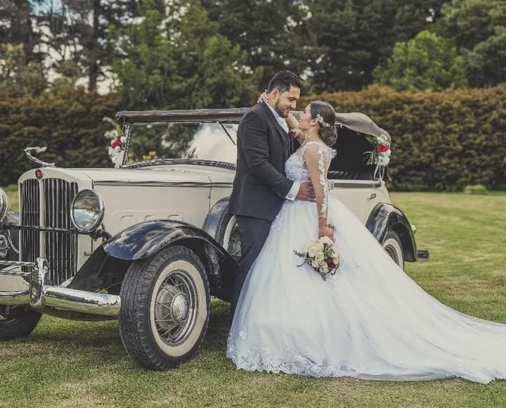

Mi nombre es Jose Andrade
Soy José Andrade, Ingeniero Mecánico nacido en Bogotá, con una profunda pasión por la mecánica desde temprana edad. A lo largo de mi carrera me especialicé en el mantenimiento de aires acondicionados, proyectos de ventilación y reparación de automotores en las fuerzas armadas, lo que fortaleció mis habilidades técnicas y mi compromiso con la excelencia. Actualmente, me encuentro enfocado en el desarrollo web y de aplicaciones como desarrollador Full Stack, buscando integrar mi experiencia técnica con soluciones digitales que impacten positivamente en la vida de las personas.
Esta transición hacia el ámbito tecnológico responde a mi deseo de seguir aprendiendo y adaptándome a los desafíos del mundo actual, combinando el análisis de sistemas complejos con herramientas digitales para generar valor real y sostenible.
Mi Infancia
Bogotá D.C en 1997
En 1997, el mundo vivía importantes cambios y avances. La tecnología daba pasos grandes con el auge del Internet y la clonación de la oveja Dolly. En política, Hong Kong regresaba a manos de China tras más de un siglo bajo dominio británico, y Tony Blair asumía como primer ministro del Reino Unido. Ese mismo año, la trágica muerte de la princesa Diana conmovía al mundo entero, mientras el cine y la música vivían un auge con fenómenos como Titanic y las Spice Girls. Fue un año de contrastes: innovación, conmoción y nuevas etapas para muchos países.
Mis padres Jose Moreno y Cenaida Gutiérrez, desde el comienzo siempre se enforcaron en transmitir confianza y seriedad en las actividaes que desempeñara, por lo que me apoyaban en el descubrimiento de nuevas habilidades, como desarmar aparatos viejos, conocer su funcionamiento, su fin, el poder realizar actividades manuales como realizar ballestas, arcos de madera, pequeños robots que funcionaban con cauchos o ligas entre otras cosas, todo esto me formo para años despues iniciar mis estudios en un colegio Técnico de Bogotá.
Estudios - ITI Francisco Jose de Caldas
Ingresé al Colegio Técnico Industrial Francisco José de Caldas, donde comencé mi formación en la carrera técnica en Mecánica Industrial. Allí tuve mi primer acercamiento al manejo de máquinas como tornos, fresadoras y otras herramientas de precisión. Desde el primer momento, me sentí fascinado por el funcionamiento interno de las máquinas, lo que despertó en mí una profunda pasión por los motores y todo lo relacionado con el mundo mecánico. Fue en esos talleres, entre metal, aceite y engranajes, donde descubrí lo que realmente me inspiraba.
Experiencia Laboral
Después de culminar mi formación técnica en Mecánica Industrial, comencé mi trayectoria profesional en el área de aire acondicionado, donde adquirí experiencia en la instalación, mantenimiento y reparación de sistemas tanto residenciales como comerciales. Este campo me permitió perfeccionar mis habilidades técnicas, desarrollar un alto nivel de precisión y comprender a fondo los sistemas de climatización.
Con el tiempo, decidí dar un paso más en mi carrera y me vinculé al área de mantenimiento mecánico de vehículos militares. Esta etapa representó un gran reto y, a la vez, una oportunidad única para aplicar y ampliar mis conocimientos. Trabajé con sistemas complejos de motorización, transmisión, frenos y suspensión, enfrentando condiciones exigentes que requerían compromiso, disciplina y trabajo en equipo. Esta experiencia fortaleció mi pasión por la mecánica y me formó como un profesional versátil, capaz de adaptarse a distintos entornos técnicos y asumir responsabilidades de alto nivel.
Actualidad
Actualmente estoy felizmente casado, compartiendo mi vida con una maravillosa mujer, amiga, confidente y compañera de aventuras y nuestras dos hermosas gatas, que llenan nuestro hogar de ternura y alegría. Hemos construido juntos un espacio lleno de amor, tranquilidad y unión, un verdadero refugio donde cada día se fortalece nuestra familia. Me siento profundamente agradecido con Jehová Dios por esta etapa de mi vida, y con una mentalidad firme y positiva, me esfuerzo por ser un excelente cabeza del hogar. Mi mayor motivación es brindarles bienestar, estabilidad y felicidad a los míos, guiándolos con amor, responsabilidad y el deseo constante de salir adelante, sin perder de vista los valores que nos mantienen unidos.
